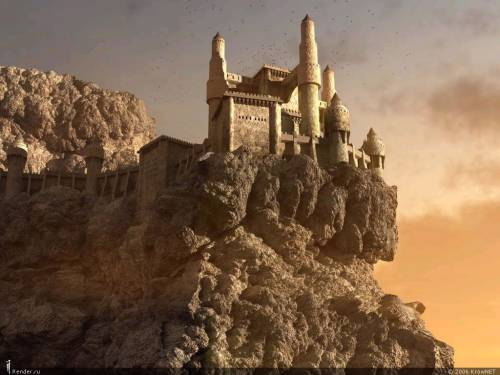

back
Inzan Fortress

Inzan is a City-Fortress built on the side of a mountain, overlooking a 100 meter cliff where the Feldin river lies. The Castle stand atop the highest elevation and its canons are aimed both at the river and every other direction in which an enemy force could be imagined to come from. The city has two set of walls surrounding it, the first one, around 30 meters high, is made of solid stone collected from the nearby mountain. The second one, around 10 meters high (and inside the first one) is made of iron reinforced by mithril. There are two main gates to the city, each of them on the opposite side of the river. Each gate has a complex drawbridge of over a kilometer long that works through a perfect combination of elven magic and dwarven engineering, those bridge lead to small cities on either side of the ravine that serves as an entranceway to Inzan.
Inzan itself is the Kingdom of Fandor main military base. There are guards everywhere, the Kingdom is known for having a large army and great guards to keep the peace, but this notion is put to the extreme in Inzan. Despite being a city with resident and commerce, Inzan is a military fortress before anything else. The main industries of the town are military-focused, most people living there are employed in the army or the national guards and even the local bards only sing of military victories.
Inzan is one of the largest city on the continent, it is a feat of human strength. It is known throughout the world as the impenetrable fortress, the Kingdom of Fandor makes it a point to keep it in the best of condition and always ready to defend itself, even though it knows that no one would dare set foot near it.